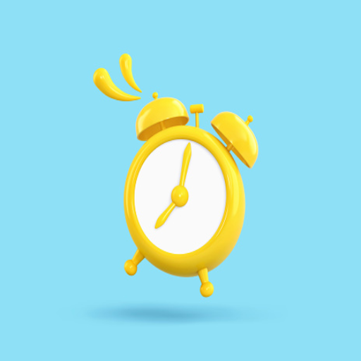
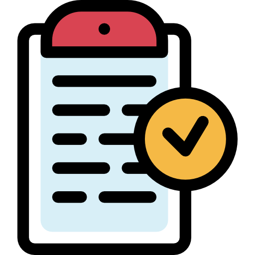

io
<ion-content [fullscreen]="true">
  
  <div class="main-content">
    <ion-toolbar>
      <ion-buttons slot="start">
        <ion-menu-button menu="first" color="warning"></ion-menu-button>
      </ion-buttons>
  
    </ion-toolbar>

    <div class="user-profile">
      

      <div class="user-data">
        <h3 class="user-name animate__bounce">Bienvenido</h3>
        <h3 class="user-name">{{ user }}</h3>
      </div>
    </div><!--div perfil-->

    <div class="content-div">

      <div class="buttons-div">
        <ion-grid fixed>
          <ion-row>
            <ion-col size="6">

              <mat-card>
                <mat-card-actions>
                  
                  <button mat-button>Escanear</button>
                </mat-card-actions>
              </mat-card>

            </ion-col>

            <ion-col size="6">

              <mat-card>
                <mat-card-actions>
                  
                  <button mat-button>Horario</button>
                </mat-card-actions>
              </mat-card>

            </ion-col>

            <ion-col size="6">
                <mat-card >
                  <mat-card-actions >
                    
                    <button mat-button>ayuda</button>
                  </mat-card-actions>
                </mat-card>
              
            </ion-col>

            <ion-col size="6">

              <mat-card>
                <mat-card-actions>
                  
                  <button mat-button>Historial</button>
                </mat-card-actions>
              </mat-card>

            </ion-col>
          </ion-row>
        </ion-grid> 
      </div>

    </div><!--content info-->

  </div>

  <ion-tabs>

    <ion-tab-bar slot="bottom">
  
      <ion-tab-button tab="account">
        <ion-icon name="person-outline"></ion-icon>
        <ion-label>Perfil</ion-label>
      </ion-tab-button>
  
  
      <ion-tab-button tab="settings">
        <ion-icon name="settings-outline"></ion-icon>
        <ion-label>Ajustes</ion-label>
      </ion-tab-button>
  
  
    </ion-tab-bar>
  
  
  </ion-tabs>

</ion-content>
